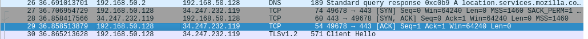

LAYER 4
TCP:transmission control protocol -connnection oriented protocol-used in http or https or ssh or ftp-high reliability
UDP:user datagram protocol -connection less protocol-used in streaming service or voice over ip(Voip)
tcp works on 3 way handshake
SYN > SYN ACK > ACK
Send a syn packet recieve back a syn ack packet and send back an Ack packet
start wireshark and start capturing fata

see 1st tcp sends a tcp packet from ur machine to browser recieves synack packet measn authorization done and then sent ack packet from ur machine
in kali type '&' after any command if that command ever requires shell access in the background